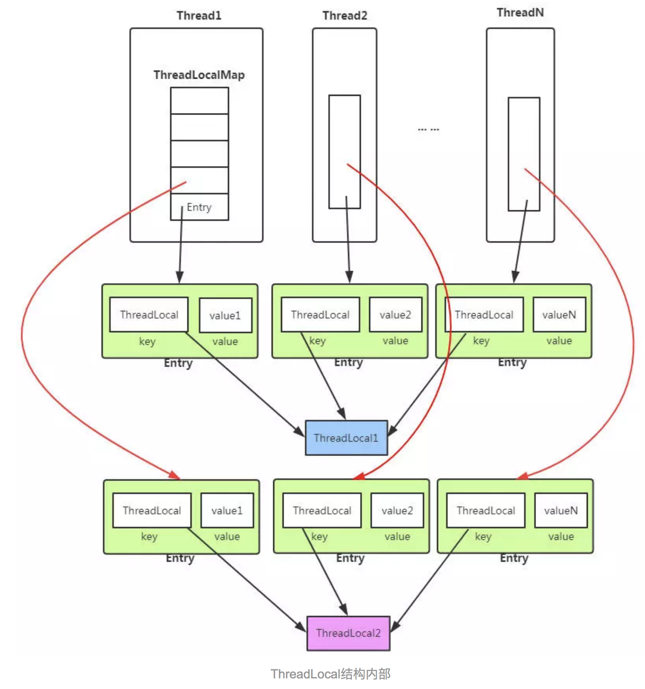
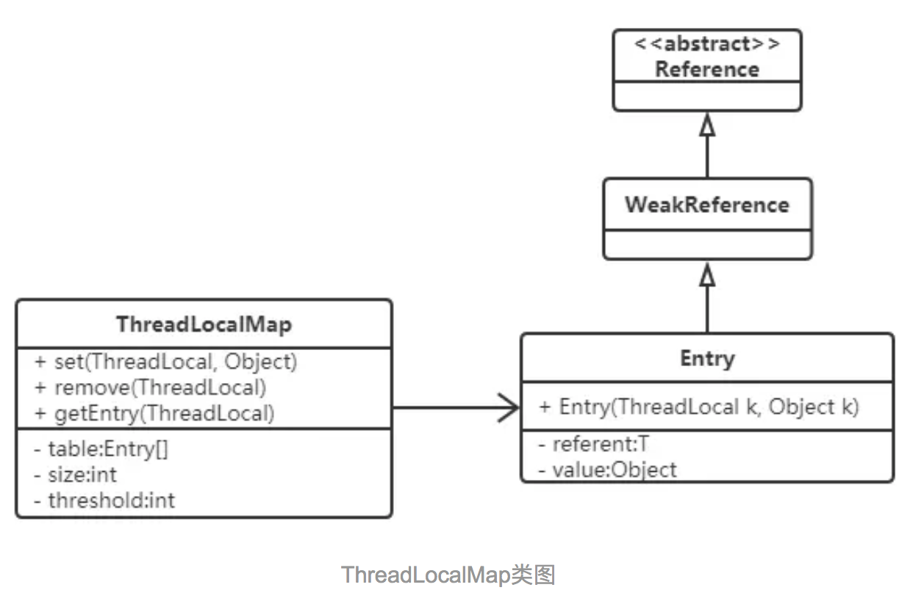
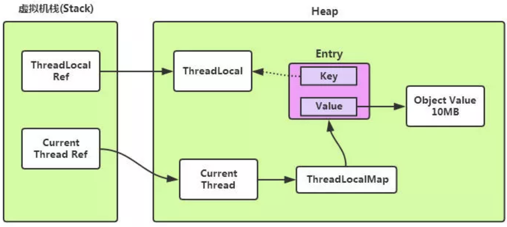

本文为 ThreadLocal 整理和总结
ThreadLocal是什么
ThreadLocal是一个本地线程副本变量工具类。主要用于将私有线程和该线程存放的副本对象做一个映射，各个线程之间的变量互不干扰，在高并发场景下，可以实现无状态的调用，特别适用于各个线程依赖不通的变量值完成操作的场景。
数据结构
下图为ThreadLocal的内部结构图

从上面的结构图，我们已经窥见ThreadLocal的核心机制：
- 每个Thread线程内部都有一个Map(ThreadLocalMap)。
- Map里面存储线程本地对象（key(threadlocal)）和线程的变量副本（value）
- 但是，Thread内部的Map是由ThreadLocal维护的，由ThreadLocal负责向map获取和设置线程的变量值。
所以对于不同的线程，每次获取副本值时，别的线程并不能获取到当前线程的副本值，形成了副本的隔离，互不干扰。
Thread线程内部的Map在类中描述如下：
深入解析ThreadLocal
ThreadLocal类提供如下几个核心方法：
- get()方法用于获取当前线程的副本变量值。
- set()方法用于保存当前线程的副本变量值。
- initialValue()为当前线程初始副本变量值。
- remove()方法移除当前前程的副本变量值。
get()
|
|
步骤：
- 获取当前线程的ThreadLocalMap对象threadLocals
- 从map中获取线程存储的K-V Entry节点。
- 从Entry节点获取存储的Value副本值返回。
- map为空的话返回初始值null，即线程变量副本为null，在使用时需要注意判断NullPointerException。
set()
|
|
步骤：
- 获取当前线程的成员变量map
- map非空，则重新将ThreadLocal和新的value副本放入到map中。
- map空，则对线程的成员变量ThreadLocalMap进行初始化创建，并将ThreadLocal和value副本放入map中。
remove()
|
|
remove方法比较简单，不做赘述。
ThreadLocalMap贯穿始终, 那每个线程中的ThreadLoalMap究竟是什么?
ThreadLoalMap
ThreadLocalMap是ThreadLocal的内部类，没有实现Map接口，用独立的方式实现了Map的功能，其内部的Entry也独立实现。

在ThreadLocalMap中，也是用Entry来保存K-V结构数据的。但是Entry中key只能是ThreadLocal对象，这点被Entry的构造方法已经限定死了。
|
|
Entry继承自WeakReference（弱引用，生命周期只能存活到下次GC前），但只有Key是弱引用类型的，Value并非弱引用。
ThreadLocalMap的成员变量：
|
|
hash冲突
先看看ThreadLoalMap中插入一个key-value的实现
|
|
和HashMap的最大的不同在于，ThreadLocalMap结构非常简单，没有next引用，也就是说ThreadLocalMap中解决Hash冲突的方式并非链表的方式，而是采用线性探测的方式，所谓线性探测，就是根据初始key的hashcode值确定元素在table数组中的位置，如果发现这个位置上已经有其他key值的元素被占用，则利用固定的算法寻找一定步长的下个位置，依次判断，直至找到能够存放的位置。
ThreadLocalMap解决Hash冲突的方式就是简单的步长加1或减1，寻找下一个相邻的位置。
|
|
显然ThreadLocalMap采用线性探测的方式解决Hash冲突的效率很低，如果有大量不同的ThreadLocal对象放入map中时发送冲突，或者发生二次冲突，则效率很低。
所以这里引出的良好建议是：每个线程只存一个变量，这样的话所有的线程存放到map中的Key都是相同的ThreadLocal，如果一个线程要保存多个变量，就需要创建多个ThreadLocal，多个ThreadLocal放入Map中时会极大的增加Hash冲突的可能。
内存泄露
先看看Entry的实现
|
|
看图

由于ThreadLocalMap的key是弱引用，而Value是强引用。这就导致了一个问题，ThreadLocal在没有外部对象强引用时，发生GC时弱引用Key会被回收，而Value不会回收，如果创建ThreadLocal的线程一直持续运行，那么这个Entry对象中的value就有可能一直得不到回收，发生内存泄露。
ThreadLocal在ThreadLocalMap中是以一个弱引用身份被Entry中的Key引用的，因此如果ThreadLocal没有外部强引用来引用它，那么ThreadLocal会在下次JVM垃圾收集时被回收。这个时候就会出现Entry中Key已经被回收，出现一个null Key的情况，外部读取ThreadLocalMap中的元素是无法通过null Key来找到Value的。因此如果当前线程的生命周期很长，一直存在，那么其内部的ThreadLocalMap对象也一直生存下来，这些null key就存在一条强引用链的关系一直存在：Thread –》 ThreadLocalMap –》 Entry –》 Value，这条强引用链会导致Entry不会回收，Value也不会回收，但Entry中的Key却已经被回收的情况，造成内存泄漏。
但是JVM团队已经考虑到这样的情况，并做了一些措施来保证ThreadLocal尽量不会内存泄漏：在ThreadLocal的get()、set()、remove()方法调用的时候会清除掉线程ThreadLocalMap中所有Entry中Key为null的Value，并将整个Entry设置为null，利于下次内存回收。
再次看ThreadLocal的get()方法底层实现
|
|
在调用map.getEntry(this)时，内部会判断key是否为null，继续看map.getEntry(this)源码
|
|
在getEntry方法中，如果Entry中的key发现是null，会继续调用getEntryAfterMiss(key, i, e)方法，其内部回做回收必要的设置，继续看内部源码：
|
|
注意k == null这里，继续调用了expungeStaleEntry(i)方法，expunge的意思是擦除，删除的意思，见名知意，在来看expungeStaleEntry方法的内部实现：
|
|
注意这里，将当前Entry删除后，会继续循环往下检查是否有key为null的节点，如果有则一并删除，防止内存泄漏。
但这样也并不能保证ThreadLocal不会发生内存泄漏，例如：
- 使用static的ThreadLocal，延长了ThreadLocal的生命周期，可能导致的内存泄漏。
- 分配使用了ThreadLocal又不再调用get()、set()、remove()方法，那么就会导致内存泄漏。
why 弱引用
从表面上看，发生内存泄漏，是因为Key使用了弱引用类型。但其实是因为整个Entry的key为null后，没有主动清除value导致。很多文章大多分析ThreadLocal使用了弱引用会导致内存泄漏，但为什么使用弱引用而不是强引用？
官方文档的说法：
|
|
下面我们分两种情况讨论：
- key 使用强引用：引用的ThreadLocal的对象被回收了，但是ThreadLocalMap还持有ThreadLocal的强引用，如果没有手动删除，ThreadLocal不会被回收，导致Entry内存泄漏。
- key 使用弱引用：引用的ThreadLocal的对象被回收了，由于ThreadLocalMap持有ThreadLocal的弱引用，即使没有手动删除，ThreadLocal也会被回收。value在下一次ThreadLocalMap调用set,get，remove的时候会被清除。
比较两种情况，我们可以发现：由于ThreadLocalMap的生命周期跟Thread一样长，如果都没有手动删除对应key，都会导致内存泄漏，但是使用弱引用可以多一层保障：弱引用ThreadLocal不会内存泄漏，对应的value在下一次ThreadLocalMap调用set,get,remove的时候会被清除。
因此，ThreadLocal内存泄漏的根源是：由于ThreadLocalMap的生命周期跟Thread一样长，如果没有手动删除对应key的value就会导致内存泄漏，而不是因为弱引用。
如何避免内存泄露
综合上面的分析，我们可以理解ThreadLocal内存泄漏的前因后果，那么怎么避免内存泄漏呢？
每次使用完ThreadLocal，都调用它的remove()方法，清除数据。
在使用线程池的情况下，没有及时清理ThreadLocal，不仅是内存泄漏的问题，更严重的是可能导致业务逻辑出现问题(由于ThreadLocal是以当前线程为key，所以如果前后有两条请求发到后台，并且这两条请求都是使用的线程池里面的同一个线程, 若不清理则之前请求的数据还在ThreadLocal中,则会出现业务逻辑问题)。所以，使用ThreadLocal就跟加锁完要解锁一样，用完就清理。
|
|
应用场景
还记得Hibernate的session获取场景吗？
|
|
为什么？每个线程访问数据库都应当是一个独立的Session会话，如果多个线程共享同一个Session会话，有可能其他线程关闭连接了，当前线程再执行提交时就会出现会话已关闭的异常，导致系统异常。此方式能避免线程争抢Session，提高并发下的安全性。
使用ThreadLocal的典型场景正如上面的数据库连接管理，线程会话管理等场景，只适用于独立变量副本的情况，如果变量为全局共享的，则不适用在高并发下使用。
总结
- 每个ThreadLocal只能保存一个变量副本，如果想要上线一个线程能够保存多个副本以上，就需要创建多个ThreadLocal。
- ThreadLocal内部的ThreadLocalMap键为弱引用，会有内存泄漏的风险。
- 适用于无状态，副本变量独立后不影响业务逻辑的高并发场景。如果如果业务逻辑强依赖于副本变量，则不适合用ThreadLocal解决，需要另寻解决方案。
ref:
https://www.jianshu.com/p/98b68c97df9b
https://www.jianshu.com/p/a1cd61fa22da